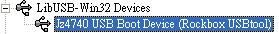
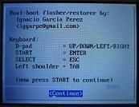
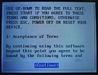
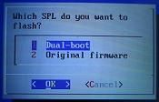
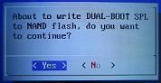
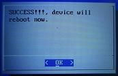

Steward
分享是一種喜悅、更是一種幸福
掌機 - Dingoo A320 - OpenDingux - 安裝系統
參考資訊：
https://github.com/steward-fu/website/releases/download/a320/opendingux.7z
安裝步驟：
1. 格式化4G MiniSD成FAT32格式(只能在Windows系統下格式化)
2. 將rootfs.bin複製到MiniSD根目錄
3. 將zImage(依據驅動IC型號)複製到MiniSD根目錄
4. 下載驅動程式
5. 將MiniSD插入A320掌機
6. 如果已經有刷Dingux系統就直接按住Select按鈕開機即可，如果沒有請繼續下一個步驟
7. 透過USB連接到電腦
8. 按住B按鈕後，按一下Reset按鈕(B按鈕持續按住)
9. 出現Jz4740 USB Boot Device裝置時(如果沒有請重複上一個步驟)，選擇下載的驅動程式資料夾更新

10. 在剛剛下載的驅動程式資料夾裡，新增setup.bat檔案(內容如下，依據驅動IC選擇適合的檔案)
usbtool-win 1 hwinit_ILI9338.bin 0x80000000 usbtool-win 1 zImage_dual_boot_installer_ILI9338 0x80600000
11. 執行setup.bat檔案
A320掌機會重新開機並顯示Dingux的藍色字體，接著按Start按鈕

按Start按鈕

選擇Yes，然後按Start按鈕
按Start按鈕

選擇Yes，然後按Start按鈕

按Start按鈕，接著請按住Select按鈕直到開機完成
